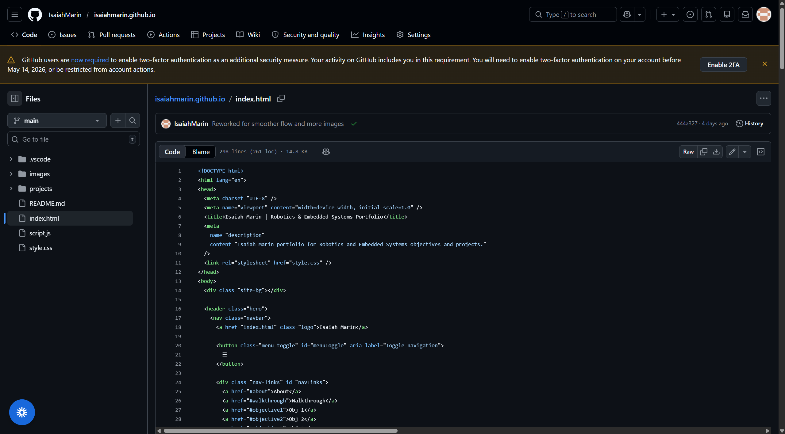
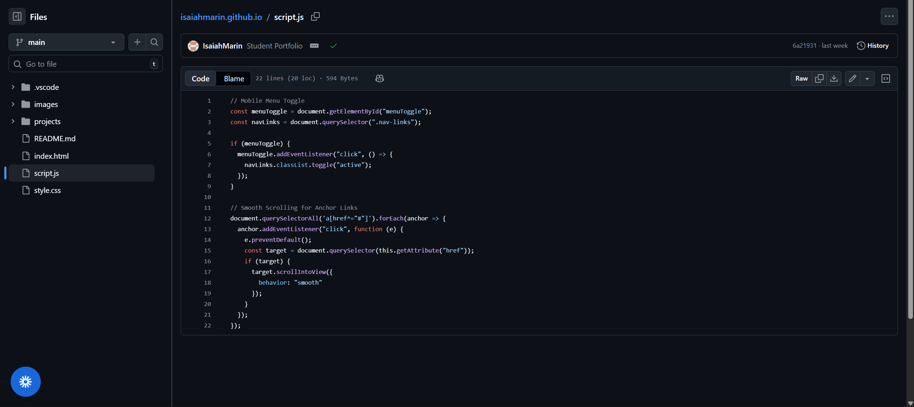
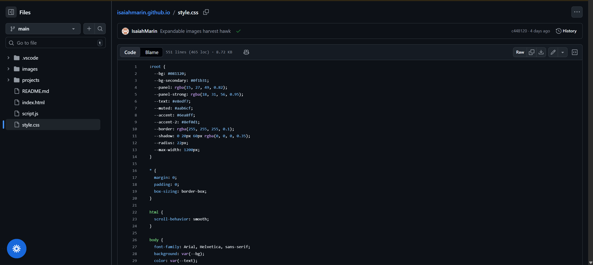
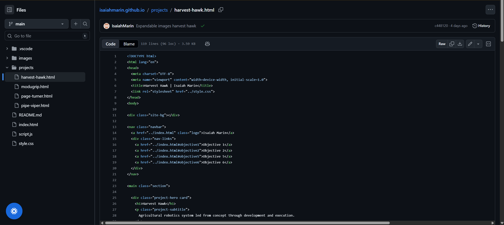
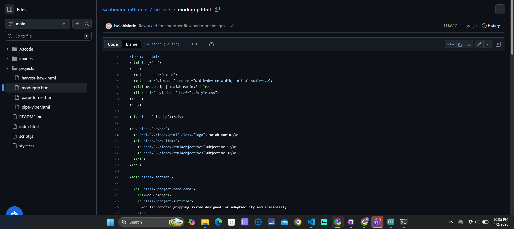
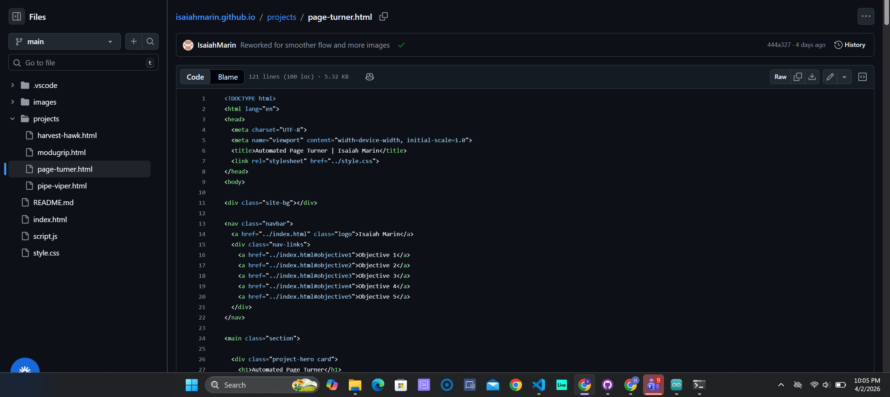
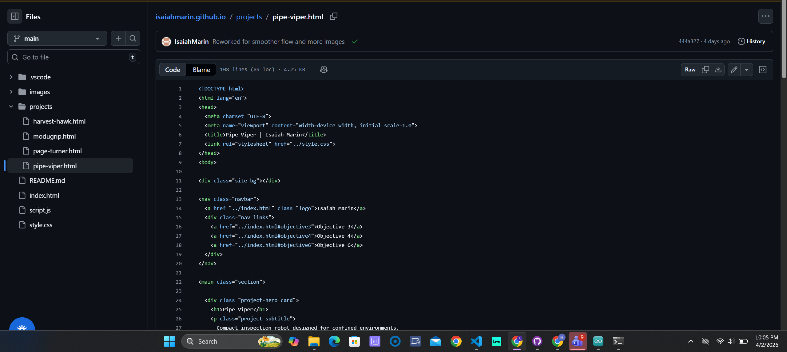

Portfolio Website
Multi-page portfolio website built to present program objectives, projects, and supporting evidence in a professional format.







Overview
This project is a custom-built portfolio website designed to organize and present my work in Robotics and Embedded Systems. The site was structured around the six program objectives and built with separate project pages, navigation, responsive layout behavior, and supporting visual evidence for each section.
Objectives Demonstrated
Objective 5: Design and analyze real-time embedded systems, including advanced digital logic design, signal processing and highspeed digital systems.
This project supports Objective 5 by functioning as an interactive system where user input directly affects navigation, layout behavior, and content presentation. The responsive structure, dynamic navigation, and front-end logic required system design thinking, testing, and analysis to ensure the website behaved reliably across devices and screen sizes.
Evidence of Functionality
The screenshots above provide evidence of the completed website layout, project navigation, objective structure, and responsive presentation. These images verify that the portfolio was implemented as a functioning multi-page system rather than existing only as a concept or mockup.
Project Evidence
GitHub Repository: Add GitHub Link
Demo Evidence: This live website serves as the functional demonstration of the project. Navigation, responsiveness, and interactive elements can be directly tested by the user across devices.
Key Features
- Responsive layout for desktop and mobile devices
- Multi-page navigation structure
- Objective-based project organization
- Interactive UI behavior with JavaScript
- Image and evidence support for project validation